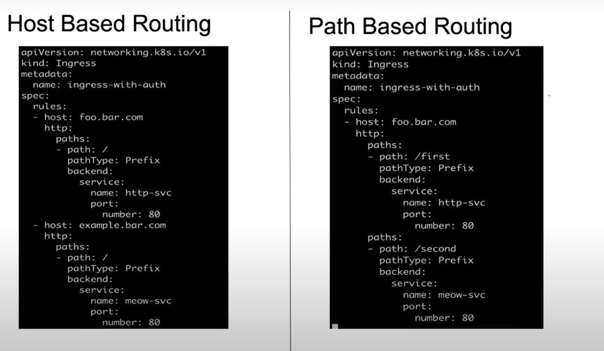

Ingress is used to expose the website to world.
Why we use Ingress ?
Ingress is used as a load balancer , though we have loadbalancer service but still we use ingress because it is cost effective and intelligest to route the traffic on requsted service.
what is loadbalancer service ?
let say you wants create a service that will only hosts images, so you will create pod and a service whick only deals with images.so load balancer is a service used to route the traffic in roundrobbin basis as per service requested, let say request is for images only, it will go to service that serves images.
why we use ingress if we have load balancer ?
We use Ingress because the loadbalancer service is not enterprise level as enterprise load balancer are nginx, f5 etc, they are provides some advance features which load balancer service in k8s doesnt provide.
An Ingress may be configured to give Services externally-reachable URLs, load balance traffic, terminate SSL / TLS, and offer name-based virtual hosting.
Ingress uses ingress controller.
Host based
path based
TLS/NON TLS
Wild card
